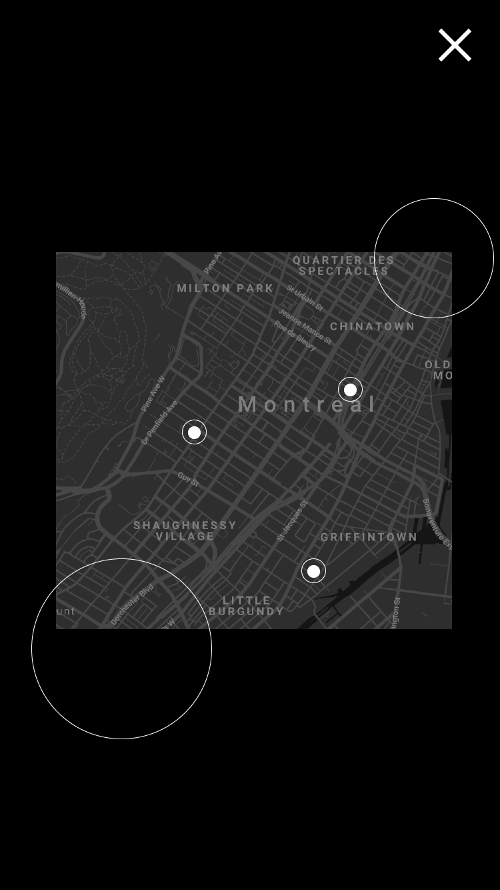
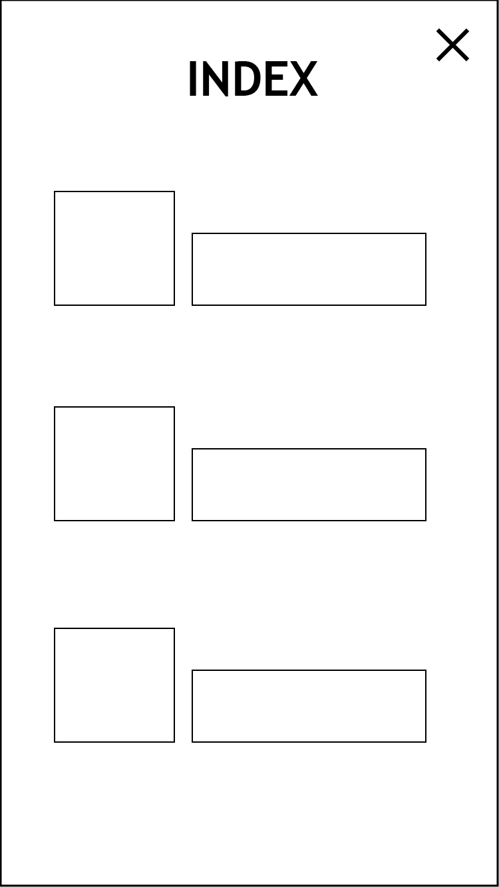
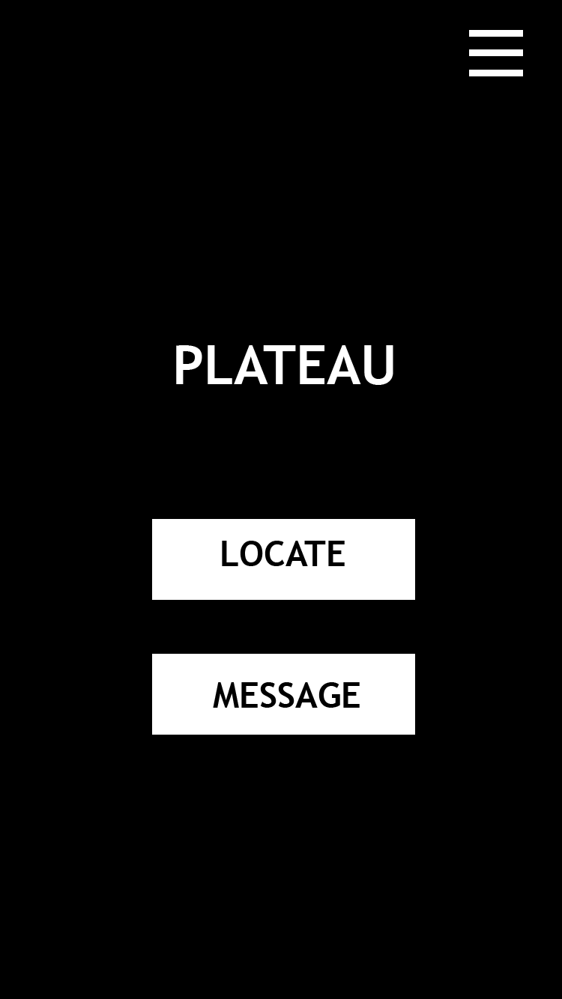
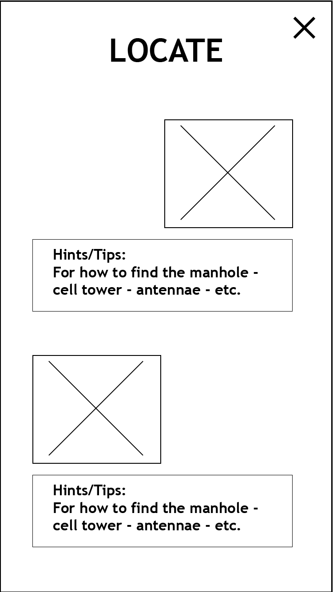
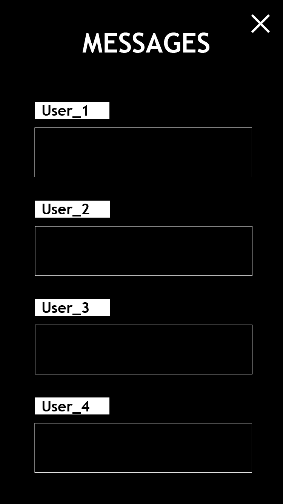

The topic I chose to start with is public infrastructure. I thought about the various public infrastructures that are essential to our everyday lives including: the plumbing system, energy/electric grids, and internet/mobile networks. I think the way people’s living spaces are connected to each other in a city, via pipes and cables, is fascinating and also somewhat comforting. When I was younger, I was interested in mazes and labyrinths, mostly because I had this incredible big book of interactive mazes. Some of the mazes in this book took place in imaginary plumbing systems, catacombs, and in electric circuits. Perhaps it is because of my experience with this book that public infrastructural networks have always had such an intense allure.
Despite wanting to have an excuse to learn more about the various public infrastructure systems in Montreal and the local institutions that govern them, I thought it would be best to focus on one specific network infrastructure. Since this course focuses on the digital medium, it made sense to select the network that is most closely related to this medium: the internet/mobile network.
The technologies that carry out our network and mobile services hide in plain sight in our cities. We have become used to ignoring them, despite the important role that they play in our daily lives.
We tend to only become aware of the power and ubiquity of these network infrastructures when they break or malfunction. I believe it is important for people to become aware of the network devices around them. I would like to help people become curious about what is truly going on under the city’s manholes, or in the antennas on top of roofs of tall buildings. I would like to call into question issues concerning network ownership and its social and political implications. I believe that a public that is able to notice and engage with the network infrastructure in their city and how it relates to their daily life might be better equipped when it comes to creating public policy that governs these services.
This project will use an explorable networked space to encourage users to interact with their physical urban environment. “Digital Field Guide” will include a main website made for mobile devices which will have an embedded map in order to help users navigate the city in a specific way. The main site will have a simple design consisting of two components: a map and a page titled “Index”. The Index page will start off empty, and will begin to fill with images and notes regarding the various mobile and internet-related public structures the user has passed by in their walks around the city. The idea is that the user will start off on the mobile web page and then will need to walk around to the locations designated on the map in order to trigger certain events on the web page.
The locations indicated on the map will be of mini routers hidden throughout the city. The routers will function as wireless dead drops. Thanks to a USB connected to the mini routers, the routers will have 16 GB of storage upon which it will be able to save images, messages, and web pages. The routers will show up as Open WiFi networks, but will in fact not be connected to the main internet. When the user is in proximity to one of these routers, the web page will prompt them to leave their current network, which presumably will be their mobile data, and switch onto the nearby WiFi access point of the mini routers. In order to participate in this experience, the user will of course have to consent to their geolocation being used. However for privacy reasons this information will not be saved by the project.
When the user switches to the access point of the mini routers, they will be able to see another html page which will give indications about where and how to spot the relevant network infrastructure in the area. The router will contain photos, tips, and information about what the user should be looking for.
I hope that by making the user switch from their internet connection to a digital environment that resembles the internet in every way except for function will destabilize the user and cause them to think critically about the physicality of the internet. The digital environment will recall the experience of going online in the sense that the user will connect to this digital space via selecting a WiFi network and navigating an html page. This destabilization elicited by the uncanny similarity in experience will hopefully cause the user to think even more about the physical aspects of the internet, which are at the heart of this project.
This project is meant to be an engaging way to inform the public about internet infrastructure in the city. It is a project which points out public network infrastructure while also including an offline type of network by use of the wireless mini-routers. The idea is to break down the public concept of “the Internet” in a way that is entertaining and also community building. The community building aspect comes in the way of the mini-routers which additionally to the information about public structures will include a message board. The message board is important because this will be a way of sharing location-specific knowledge with other users. This function is also a nod to the GeoCaching community, which predates dead drops, wireless mini-routers and their ilk.
Story Board
It is recommended to view the pdfs below completely zoomed out.
Main Mobile Site UI


Example of One Router UI



Similar Projects
This proposal is inspired by three existing projects. The first project it is similar to is a book called Networks of New York by Ingrid Burrington . This book is designed to offer a tour of New York City by learning about the city’s network infrastructure. This book operates as an analog version of my proposed project. Networks of New York was created by an artist who includes her own hand-drawn representations of the network infrastructure she sees in the urban landscape that surrounds her. The book serves to demystify the purpose and meaning behind manhole covers, construction markings on sidewalks, as well as cell phone towers and antennas on city buildings. Accompanying the drawings in the book, the artist/author includes notes about the city’s politics and the institutions and companies behind these structures that live in the public urban space. The book is meant to accompany the reader while they take a stroll around the city and understand their environment in a new way.
PirateBox, according to its website, is a “DIY anonymous offline and file-sharing communications system.” It is an open-source project spearheaded by David Darts, a professor at New York University. This project has been compared to library boxes that people set up to exchange books with their neighborhoods. The project is appealing because it is anonymous. Therefore some have used this technology to disseminate various files including WikiLeaks documents as well as radical political art in countries where distribution of certain political documents is illegal.
The third project my proposal is similar to is Geocaching. Geocaching is an activity that has developed with the advent of GPS technology. However, it is based off of a much older hobby known as Letterboxing, which dates back to the 1800’s. Both activities refer to searching for old boxes or waterproof containers which can include puzzles, trinkets, as well as a logbook which includes the names of those who have previously found the container. In Letterboxing a person would have to learn about the location of a box by word of mouth or through clues printed in catalogs or newspapers. GPS brought the hobby into the 21st century by allowing users to search for the boxes by using geolocation.
The Digital Field Guide will expand on the aforementioned projects. This project will include information about public network structures, and in this way it will be similar to Ingrid Burrington’s book. The project will go a few steps further though, and allow the users to engage with the new information in an immersive way. This will be done by making the user go to the physical location of the element of the network structure is in order to unlock knowledge about the object. The project will also build on the open-source project PirateBox. PirateBox serves as a useful way to deconstruct concepts the public might hold about what the Internet is, and challenges the notion that the internet is the only existing wirelessly connected and shared digital environment. Geocaching is a playful way of engaging differently with public spaces. It allows the public to navigate their city or environment in an unconventional way. Geocaching inspires enthusiasm and curiosity among hobbyists. I would like to mimic the Geocaching process with my project in order to try to harness the same desire to explore an environment in an untraditional way.